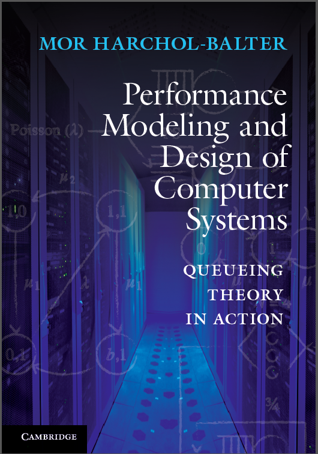

|
Mor Harchol-Balter,
Associate Professor
-
Department of Computer Science
- Carnegie Mellon University
- Pittsburgh, PA 15213
- Office: Gates Hall 7207
- Phone: (412) 268-7893
- Fax: (412) 268-5576
- harchol@cs.cmu.edu
- Exec. Assistant: Nancy Conway
-
Finally Here!
- 
|
|
ACM SIGMETRICS 2013 -- CMU June 17-21, 2013
RESEARCH
I am interested in the performance analysis and design of computer
systems, particularly distributed systems. I work on finding
analytical models which capture the important characteristics of a
computer system and allow me to redesign the system to improve its
performance (response time).
I believe that many conventional wisdoms on which we base system
designs are not well understood and sometimes false, leading to
inferior designs. Many of our existing beliefs stem from queueing
research in the 60's and 70's -- the great era for system performance
modeling. Unfortunately, back then we did not have all the analytical
and computational tools available today. Consequently, some
questions were answered only under the approximation of
Markovian workloads (exponentially distributed job sizes) which we now
know to be non-representative of many real-world workloads (which show
much greater variability and often heavy tails). Also, many
multi-server system models and scheduling/routing schemes
were not analytically tractable at that time.
My research revisits these very classic questions in system design,
armed with today's new queueing and computational techniques, as well
as a new perspective on real-world workloads, performance metrics, and
implementation experience.
I work on deriving new fundamental theorems in system design, many of
which seem counterintuitive in light of age-old beliefs. I then
incorporate these theorems into implementations of
Web servers, database servers, and distributed server
systems.
Here are a few examples of commonly-held beliefs that my research challenges:
- Thousands of "load balancing" heuristics do exactly that -- they
aim to balance the load among the existing hosts. But is load balancing
necessarily a good thing?
- Ever notice that the optimal scheduling policy,
Shortest-Remaining-Processing-Time-First (SRPT), is rarely used in
practice? There's a fear that the big jobs will "starve", or be
treated unfairly as compared with Processor-Sharing (PS). But is
this a reality?
- To minimize mean waiting time in a server farm, research suggests that each job should be sent to the server at which it will experience the least wait. That seems good from the job's perspective, but is the greedy strategy best for the system as a whole?
- Given a choice between a single machine with speed s, or n
identical machines each with speed s/n, which would you choose?
Think again ...
- Migrating active jobs is generally considered too expensive.
Killing jobs midway through execution and restarting them from scratch
later is even worse! Says who?
- Cycle stealing (using another machine's idle cycles to do your work) is
a central theme in distributed systems and has been the topic of thousands
of papers. But can we quantify when cycle stealing pays off, as a function of switching costs and threshold parameters?
My TENURE RESEARCH STATEMENT from May 2007:
SOME TALKS
- (2009) Surprising Results on Task Assignment for High-Variability Workloads:
talk slides and abstract .
- (2007) Scheduling in Server Farms:
talk slides and abstract .
- (2006) Analysis of Cycle Stealing and Priority Queueing in Multi-Server Systems via Dimensionality Reduction Technique:
talk slides and abstract .
- (2005) Scheduling Your Network Connections: the SYNC project
talk slides and abstract .
- (2006) Open Workload Generators versus Closed: A cautionary tale
Adam's talk slides and abstract .
- (2004) What Analytical Performance Modeling Teaches Us About Computer System Design
talk slides and abstract .
Current PhD STUDENTS
Sherwin Doroudi
Anshul Gandhi
Kristy Gardner
Yoongu Kim
(Joint with Onur Mutlu)
Timothy Zhu
Graduated PhD STUDENTS
Varun Gupta
, Assistant Professor at University of Chicago, Booth School of Business.
Link to Varun's thesis .
Takayuki Osogami
Researcher at IBM-TRL.
Link to Taka's thesis .
Bianca Schroeder
Assistant Professor at University of Toronto, Computer Science.
Link to Bianca's thesis .
Adam Wierman
Full Professor at Caltech, Computer Science.
Link to Adam's thesis . Winner of 2007 SCS Distinguished Dissertation Award.
David McWherter
Researcher at Google, Seattle.
PROFESSIONAL SERVICE
OFFICES:
PROGRAM COMMITTEES:
-
Sigmetrics 2000 ,
Sigmetrics 2001 ,
Sigmetrics 2002 ,
Sigmetrics 2003 ,
Sigmetrics 2004 ,
Sigmetrics 2005 ,
Sigmetrics 2006 ,
Sigmetrics 2007 ,
Sigmetrics 2008 ,
Sigmetrics 2009 ,
Sigmetrics 2012 .
-
Performance 2002 ,
Performance 2005 ,
Performance 2010 ,
Performance 2011 .
- IC2E 2013 .
- IGCC 2012 .
- HotMetrics 2010 .
- HotPower 2008 ,
HotPower 2009 .
- MAMA 2007 ,
MAMA 2008 ,
MAMA 2009 .
- WWW 2004 ,
WWW 2005 ,
WWW 2006 .
- QEST 2006 ,
QEST 2007 .
- SIPEW 2008 .
ANNUAL TALK on Applying to Ph.D. Programs in Computer Science (pdf) .
TEACHING
- (2004, 2006, 2007, 2008, 2012, 2013):
15-359 Probability and Computing (undergraduate)
- (1999,2000,2001,2002,2003, 2005, 2006, 2009, 2011, 2012)
15-857 Analytical Performance Modeling (graduate)
- (Spring 2007):
15-858A Advanced Stochastic Processes (graduate)
- (Spring 2000, Spring 2001, Fall 2002): 15-441 Computer Networks (undergraduate)
- (2000 through present): SQUALL (Scheduling and QUeueing Around Lunchtime)
|